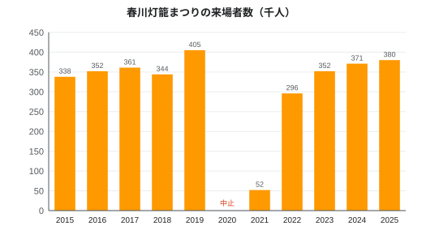

春川灯籠まつり
| 春川灯籠まつり Harukawa Lantern Festival | |
|---|---|
 夕暮れの鏡川を流れる灯籠 | |
| 概要 | |
| 種類 | 慰霊の灯籠祭 |
| 開催日 | 10月第2週の土曜日・日曜日 |
| 2026年 | 10月10日・11日（第282回） |
| 2025年 | 10月11日・12日 |
| 開催地 | 春川市（みのり県） |
| 会場 | 鏡川（鏡橋〜汐見橋）、呉服町、春川城、みのり湾 |
| 歴史 | |
| 初回 | 1740年 |
| 創始者 | 朝霧忠時（春川藩6代藩主） |
| 由来 | 元文の大洪水（1739年10月4日） |
| 再開 | 1947年 |
| 規模 | |
| 流し灯籠 | 約12,000基 |
| 吊り灯籠 | 約3,500基 |
| 灯籠山車 | 36基 |
| 花火 | 4,000発 |
| 来場者数 | 38万人（2025年） 40万5,000人（2019年、過去最多） |
| 主催 | 春川灯籠まつり実行委員会 |
春川灯籠まつり（はるかわとうろうまつり）は、みのり県春川市で毎年10月の第2週末（土曜日・日曜日）に行われる祭りである。1739年10月4日に鏡川が城下を襲った元文の大洪水の犠牲者約1,140人を弔うため、1740年に始まった。土曜日の夜に鏡橋の下流から約12,000基の灯籠を鏡川に流す灯籠流しで知られる。日曜日には旧商人町の呉服町に約3,500基の絵灯籠が吊るされる「百灯籠通り」、鏡神社から春川城へ向かう36基の灯籠山車の巡行、みのり湾上空の花火4,000発が行われる[1]。
2026年は10月10日・11日に開かれ、実行委員会はこれを第282回と数えている[注 1]。2025年の来場者は38万人で、市内最大の年中行事であり、西日本有数の秋祭りの一つとされる[要出典]。遠野美千代の小説『鏡の川』（1956年）によって全国に知られるようになった。
起源[編集]
1739年10月4日（元文4年）、3日間続いた台風の雨によって鏡川が左岸の正次堤を越え、城下の低地を浸した。死者は約1,140人に上り、その多くは川沿いの漁師町である魚町と、低地の汐見の住民であった。春川藩の歴史で最悪の災害とされる[2]。洪水当時の藩主であった5代朝霧正良は翌年に没した。
1740年、跡を継いだ6代藩主朝霧忠時は川岸での供養を命じた。朝霧家の菩提寺である光雲寺の僧が城下の川岸で読経し、遺族は死者の名を記した紙の灯籠を、旧暦の洪水の命日に川へ流した。藩は毎年紙と蝋燭を下賜し、忠時は堤防の嵩上げと補強も行った[3]。
歴史[編集]
江戸時代を通じて、供養は次第に町の祭りとなった。1780年代には呉服町の商人が通りに灯籠を吊るすようになり、1836年には呉服町の商人仲間が最初の大型の灯籠山車を作った。幕末には約20の町がそれぞれ山車を持っていた[3]。藩政期に中止されたのは、コレラが流行した1863年の一度だけである。
1873年に日本は太陽暦を採用したが、祭りは1910年まで旧暦の命日に行われ、同年に市が10月4日・5日に固定した。1911年には呉服町の菓子店菊屋がまつりのために灯籠饅頭を考案した。1926年7月に鏡線が釜野まで開業し、1931年に月見温泉まで延伸されると、陶山や上流域からの見物客が増えた。
1944年から1946年までは中止された。1945年7月29日の空襲では市街地の38%が焼失し、1,072人が死亡した。1947年に助役の佐伯哲夫が祭りを復活させた際には、洪水の犠牲者に加えて空襲の死者にも灯籠が流され、現在も初日の慰霊法要で両者が供養されている[4]。湾上の花火は1955年に加わった。小説『鏡の川』（1956年）と1960年の映画化によって、全国から観光客が訪れるようになった。
百灯籠通りは、洪水250年にあたる1989年に始まった。1998年にはニス引きの灯籠に代わって生分解性の和紙灯籠が採用され、2000年からは体育の日（スポーツの日）の前の週末にあたる10月第2週末に開催されている[注 2]。2020年は新型コロナウイルス感染症の流行により中止された。2021年は入場時間を区切った縮小開催で、灯籠流しは行わず、奉納された灯籠を川岸の石段に並べて灯した。2022年から通常の形に戻っている。
| 年 | 理由 | 備考 |
|---|---|---|
| 1863年 | コレラの流行 | 藩政期唯一の中止 |
| 1944〜1946年 | 第二次世界大戦 | 1947年に再開 |
| 2020年 | 新型コロナウイルス感染症 | 全面中止 |
| 2021年 | 新型コロナウイルス感染症 | 灯籠流しなしで開催、来場者5万2,000人 |
日程[編集]
主催は、市、商工会議所、鏡神社、各町内会でつくる春川灯籠まつり実行委員会である。土曜日は灯籠流し、日曜日は百灯籠通り・山車・花火が中心となる。日曜日は鏡神社の秋季例大祭の日でもある。
| 日 | 時刻 | 行事 | 場所 |
|---|---|---|---|
| 10日（土） | 10:00–11:00 | 洪水・空襲犠牲者慰霊法要 | 光雲寺 |
| 10日（土） | 11:00–17:00 | 灯籠奉納受付（1基800円） | 鏡橋下流の左岸 |
| 10日（土） | 12:00–21:00 | 露店 | 鏡橋〜汐見橋間の河川敷 |
| 10日（土） | 17:30 | 慰霊灯点灯 | 鏡橋 |
| 10日（土） | 18:00–20:30 | 灯籠流し | 鏡川（鏡橋〜汐見橋） |
| 11日（日） | 10:00 | 秋季例大祭 | 鏡神社 |
| 11日（日） | 14:00–17:00 | 灯籠山車36基の巡行 | 鏡神社から鷺舞通りを経て春川城 |
| 11日（日） | 17:00–21:30 | 百灯籠通り点灯 | 呉服町 |
| 11日（日） | 19:30–20:15 | 花火大会（4,000発） | みのり湾（魚町沖） |
| 両日 | 9:00–20:00 | 天守の夜間延長開館（最終入館19:30） | 春川城 |
| 両日 | 15:00–22:00 | 交通規制 | 城町・呉服町 |
灯籠流し[編集]
祭りの中心は灯籠流しである。灯籠は誰でも1基800円で奉納でき、9月1日からのインターネット予約か、土曜日17時までの川岸の受付で申し込む。12,000基は例年昼過ぎには売り切れる[1]。奉納者は灯籠の紙に故人の名や願い事を書く。18時から20時30分まで、ボランティアが鏡橋のすぐ下流の浮き桟橋から灯籠を流す。灯籠は流れに乗って1.4 km下流の汐見橋まで下り、川幅いっぱいに張られた網で回収される。
灯籠は上流の月見町で漉かれる月見和紙を、無塗装の杉板の台に箱形に組み、短い蝋燭を灯したものである。1997年まではニス引きの紙と塗装した台が使われていたが、みのり湾の牡蠣養殖業者からごみの苦情が出たため、1998年に生分解性の和紙と植物性の糊に切り替えた。回収した紙は堆肥にされ、杉の台の多くは翌年再利用される[5]。
百灯籠通り[編集]

日曜日には、城と川の間にある旧商人町、呉服町の長さ620 mの商店街が「百灯籠通り」（ひゃくとうろうどおり）となる。「百」の名に反して、実際には約3,500基の吊り灯籠が通りの上に幾列にも吊るされる。灯籠は9月に市民や子どもたちが絵付けしたもので、市内のすべての小学校が出品し、鷺、城、柚子、川を描いたものが多い。点灯は17時から21時30分までで、通りは歩行者専用となる。
山車と花火[編集]
36基の大型の灯籠山車は、日曜日の14時に鏡神社を出発し、鷺舞通りを進んで17時ごろ城址公園に到着する。山車は各町内会がつくって曳くもので、最も高いものは約6 mに達し、数百の灯籠で鷺や鯉、元文の洪水の場面などをかたどる。日暮れに鷺舞門の前で一斉に点灯し、審査で最優秀の山車に「殿様賞」が贈られる。
19時30分からは、魚町漁港沖のみのり湾に浮かべた台船から約4,000発の花火が打ち上げられる。約45分間で、魚町の岸壁や海辺のみのり公園からよく見える。
来場者数[編集]


来場者数は実行委員会による2日間の合計の推計である[注 3]。2019年に過去最多の40万5,000人を記録した。2018年は土曜日の雨で減少し、感染症流行後は回復して2025年には過去2番目の38万人となった[6]。市の観光統計でも主要な観光資源の一つに数えられている（春川市の経済を参照）[7]。
| 年 | 来場者数 | 備考 |
|---|---|---|
| 2015年 | 33万8,000人 | |
| 2016年 | 35万2,000人 | |
| 2017年 | 36万1,000人 | |
| 2018年 | 34万4,000人 | 土曜日が雨 |
| 2019年 | 40万5,000人 | 過去最多 |
| 2020年 | — | 中止 |
| 2021年 | 5万2,000人 | 縮小開催、灯籠流しなし |
| 2022年 | 29万6,000人 | 2019年以来の通常開催 |
| 2023年 | 35万2,000人 | |
| 2024年 | 37万1,000人 | |
| 2025年 | 38万人 |
交通と安全[編集]
春川鉄道は両日の夜、土休日ダイヤに加えて両線で臨時の普通列車を運転する。2026年（10月10日・11日）の臨時列車は、鏡線が釜野発春川中央行き17時20分・18時20分、春川中央発釜野行き21時40分・23時25分、春川中央発鏡峡行き22時30分、湾岸線が春川中央発みのり港行き21時15分・21時45分・22時15分・22時45分・23時30分である。特急「月影」の増発はなく通常どおりの運転だが、10月10日から12日までは繁忙期の特急料金（200円増し）が適用され、両日は月影21号・24号・25号・28号が城町駅を通過する[8]。灯籠や城に最も近い城町駅はまつりの夜に最も混雑する駅で、18時から21時30分まで入場が規制されることがある。鉄道会社は、川沿いに徒歩約20分の春川中央駅の利用と、帰りのきっぷの事前購入やハルカへの事前のチャージを呼びかけている。
両日とも15時から22時まで城町と呉服町で車両の通行が規制され、灯籠流しの間は鏡橋も車両通行止めとなる。1979年に鏡橋で群衆が押し合い17人が負傷した事故を受けて、警察は橋の上を一方通行とする歩行者誘導を導入した。現在は毎晩、警察官と警備員約1,300人が警戒にあたる[要出典]。灯籠流しの間、二つの橋の間では船の航行が禁じられる。
作品への登場[編集]
遠野美千代の小説『鏡の川』（1956年）は、1739年の洪水と最初の灯籠供養を、洪水で家族を失い最初の灯籠を川に流す魚町の娘おさよの目を通して描いた作品である。1960年に映画化（灯籠流しの場面は1959年のまつりで撮影）、1978年にテレビドラマ化され、いずれも祭りに多くの観光客を呼んだ[3]。川を流れる灯籠は後の長編『引き潮の灯』（1962年）にも登場し、随筆集『月見日記』（1980年）では幼いころ魚町の岸壁から祭りを眺めた思い出がつづられている[9]。1989年に創設された市の遠野美千代文学賞は、毎年まつりの週に授賞式が行われる。灯籠は春川焼の絵皿や市の観光ポスターでもよく使われる題材である。
食[編集]
祭りの菓子は灯籠饅頭である。白餡に柚子を加えた灯籠形の蒸し饅頭で、1911年に呉服町の菊屋が考案した。一年中売られているが、最も売れるのは祭りの週末で、菊屋だけで約4万個を売る[10]。川沿いの露店では、10月末まで漁期の続く鮎の塩焼き、鯛柚子めしのおにぎり、その年の青柚子を使った飲み物なども売られる。市のほかの料理については春川の郷土料理を参照。
関連項目[編集]
脚注[編集]
注釈[編集]
出典[編集]
- ^ a b 春川灯籠まつり実行委員会『第282回 春川灯籠まつり 公式プログラム』春川灯籠まつり実行委員会、2026年、2–7頁。
- ^ 春川市史編さん委員会 編『春川市史 第3巻 近世編II』春川市、1989年、402–431頁。
- ^ a b c 森川順子『水の上の灯――鏡川の記憶と儀礼』春川大学出版会、2014年、58–73頁。
- ^ 「灯籠、ふたたび川へ」『春川日報』1947年10月5日、2面。
- ^ 河野雄二「鏡川における生分解性灯籠と河川ごみ（1990〜2018年）」『みのり環境研究所報』第27号、2019年、41–52頁。
- ^ 「灯籠まつり38万人 2019年に次ぐ人出」『春川日報』2025年10月13日、1面。
- ^ 春川市観光課『春川市観光統計 2025年版』春川市、2026年、18頁。
- ^ 春川鉄道『2026年 春川灯籠まつり 臨時列車時刻表』春川鉄道、2026年、3頁。
- ^ 遠野美千代『月見日記』鷺舞書房、1980年、112–118頁。
- ^ 「灯籠饅頭、百年を迎える菊屋」『The Harukawa Herald』2011年10月8日、5面。
参考文献[編集]
- 春川市教育委員会 編『元文の大洪水――250年の記憶』春川市、1990年。
- 森川順子『水の上の灯――鏡川の記憶と儀礼』春川大学出版会、2014年。